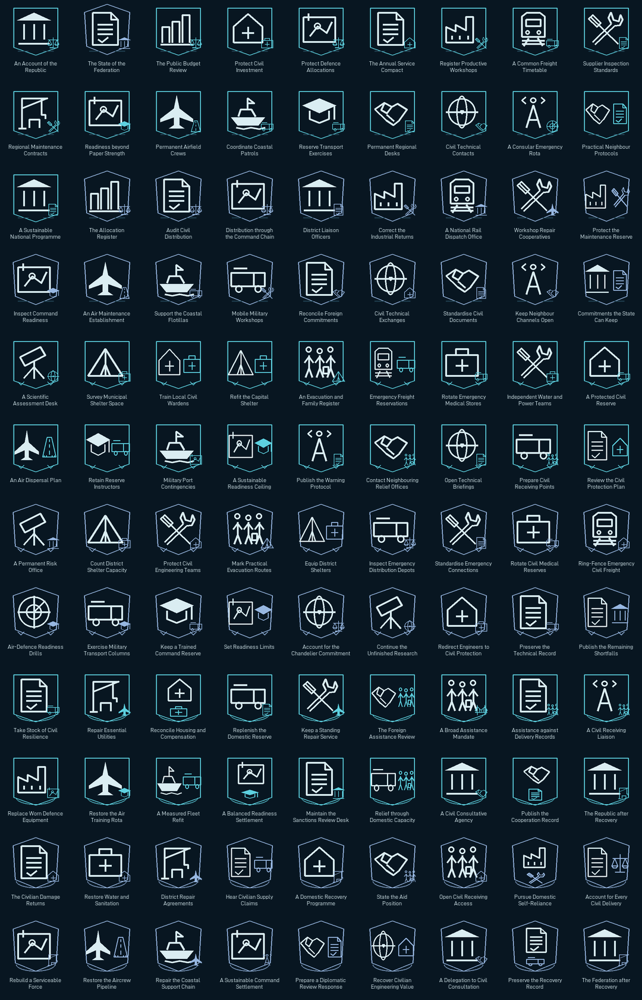
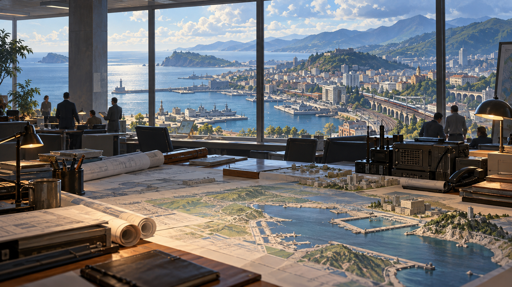
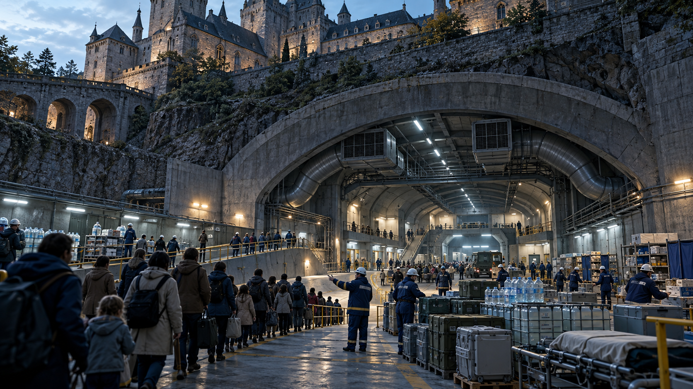
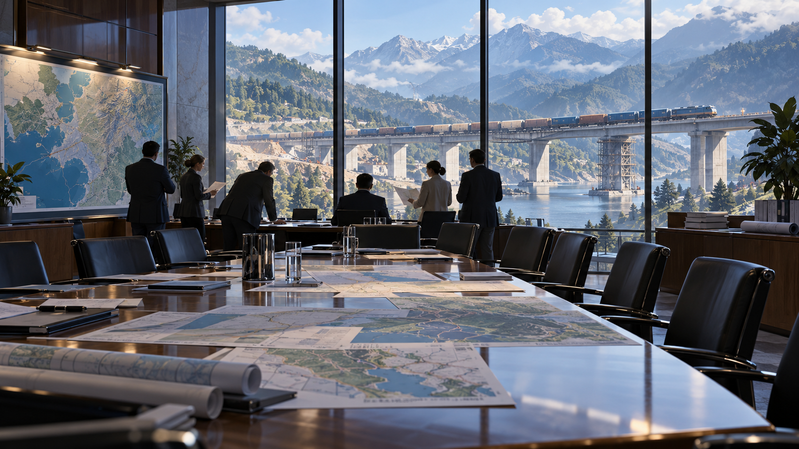
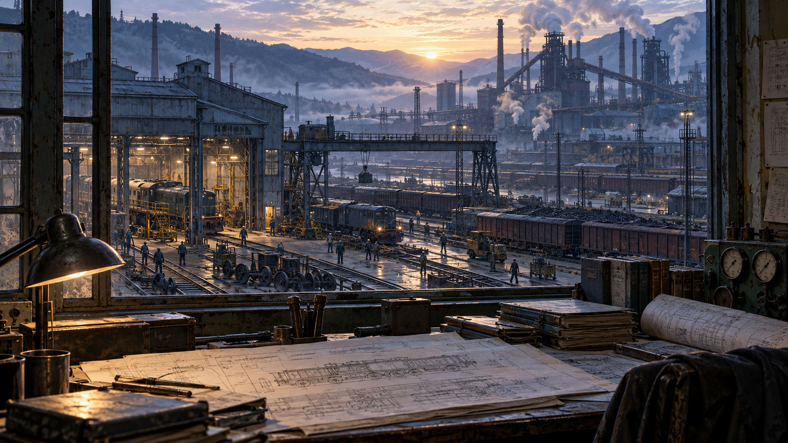
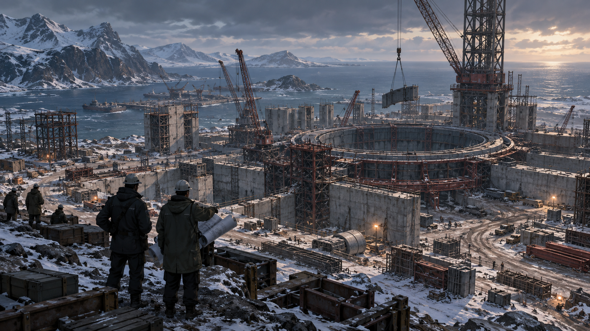
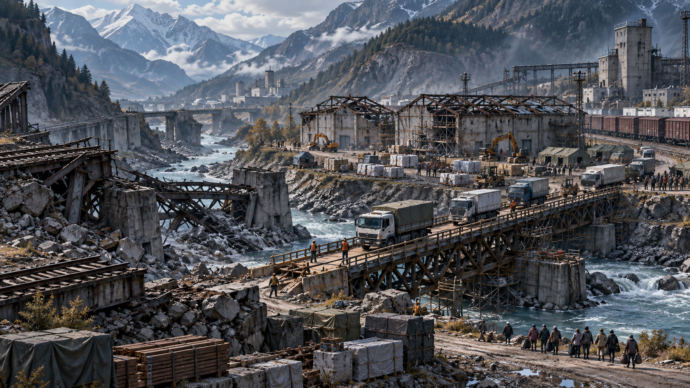
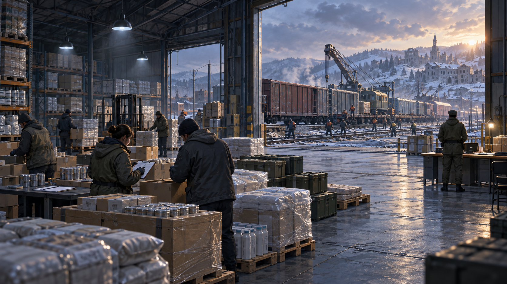

108 focus compositions, eight narrative illustrations and two independent loading scenes. Illustrations describe provisional gameplay themes; they do not assert canonical city layouts, named characters or a historical unit roster. Existing national flags remain unchanged. Native rendering acceptance is separate.
The contact sheet includes review captions; the game icons themselves contain no baked titles or numbers.








Packaging, prompts, source hashes, sprite bindings and transparency metadata: asset manifest · original prompts and provenance · focus art direction.